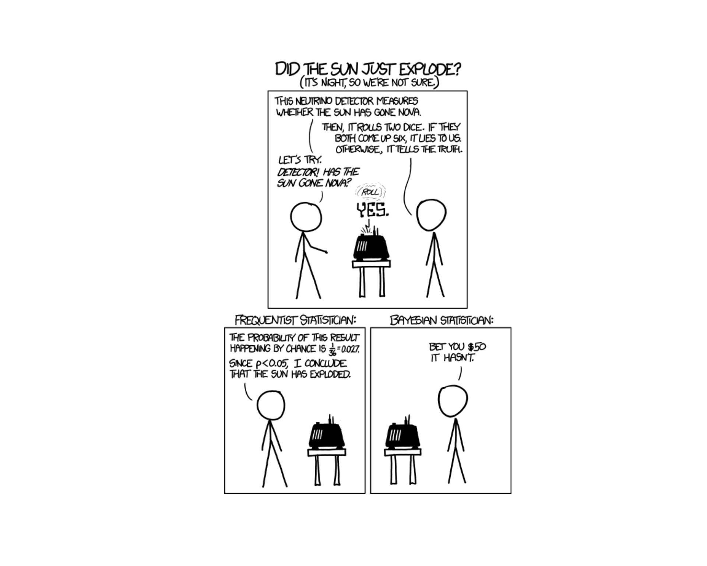
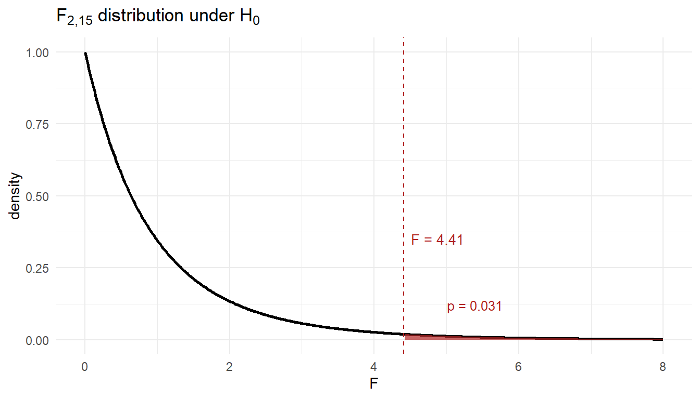

Lesson 39: TEE Review

TEE Logistics
ImportantTEE Schedule
| Section | 12 May 0730–1100 |
13 May 0730–1100 |
15 May 1300–1630 |
|---|---|---|---|
| A2 | 2 | 0 | 15 |
| B2 | 1 | 0 | 17 |
| C2 | 3 | 1 | 12 |
NoteFull Section Roster by Date
NoteA2
12 May, 0730–1100
- EDDY, ELLIOT G
- HARDER, ETHAN W
- JENKINS, KEIRA M
- KALIDINDI, HEERA S
- NEWTON, SEAN J
13 May, 0730–1100
- PHELPS, JOHN M
15 May, 1300–1630
- AIRD, ZANDER A
- ASHLEY, CAIDEN E
- BOOZER, CURTIS M
- CARTER, ISAAC M
- DWYER, LUKE P
- GARMON, MICHAEL H
- HOLTMAN, ETHAN M
- KELLY, BRENDAN R
- MCFARREN, SYDNEY L
- MCGREGOR, AUSTYN J
- MERIDETH, JUDSON W
- O’CONNOR, OWEN W
NoteB2
12 May, 0730–1100
- FEDALIZO, BALTAZAR C
13 May, 0730–1100
- WEGNER, DYLAN D
15 May, 1300–1630
- BARTOSH, BRIGHAM A
- CHEN, JUSTIN R
- CUETO, NICHOLAS C
- DIOP, KHADIJA
- GRIFFIN, CAMERON J
- HEKIMIAN, MARY RAY M
- ISONIEMI, JONATHAN A
- JEFFREY, ALEXANDER M
- KIM, DOYEE
- LEDFORD, PEYTON R
- LEE, CALEB S
- MAESTAS, NATHAN J
- MULHOLLAND, THOMAS P
- NEWMAN, NICHOLAS P
- RIBAS, HELEN A
- ROSS, JAMES C
NoteC2
12 May, 0730–1100
- CALABRESE, BENJAMIN C
- HONG, RAYMOND
- KWAK, TREVOR J
13 May, 0730–1100
- GRAY, WILLIAM C
15 May, 1300–1630
- BANZUELA, JOSHUA M
- BRADLEY, GAVIN M
- BRAEGER, SYDNEY M
- CASTINO, RYLEN J
- CATALDO, JUSTIN J
- DIAL, NADIA J
- HARTLEY, JETT M
- LINEBERGER, JAYDEN D
- PAYNE, BRENNA N
- POULTER, ZANE C
- PRATT, NATHAN C
- PROKOP, ANYA A
NoteWhat you can bring
- Reference card (the SRC – linked below). Print it; bring it to the test.
- Calculator.
- R-lite for distribution functions (
pnorm/qnorm,pt/qt,pbinom,ppois,pexp,pf/qf).
TEE Review Materials
TipDownload these now
TEE materials
- TEE Review (Practice Problems) – comprehensive review covering everything on the TEE
- TEE Review – Solutions – worked solutions to every problem in the review
- Student Reference Card (SRC) – the formula sheet you may bring into the TEE
- R-Lite (updated) – the standalone R distribution-function tool you may use on the TEE
WPR I materials (Lessons 1–14: data, probability, random variables, distributions)
WPR II materials (Lessons 17–25: CLT, CIs, hypothesis tests, two-sample inference)
WarningYou need this updated version of R-Lite
The R-Lite executable linked above has been updated – earlier copies you downloaded during the semester are out of date. Download this version and use it for the TEE. It’s the only R-Lite that will be permitted in the testing room.
How to use these materials. Work the Review closed-book with only the SRC, your calculator, and R-lite. After you finish a section, check your work against the Solutions. If you missed something, go back to the lesson(s) for that topic in the outline below.
Course Outline – Everything We Did
The course was organized into three blocks. Every topic listed here is fair game on the TEE; the TEE Review covers them all.
Block I: Data and Randomness (Lessons 1–16)
- L1–5: Types of Data, Sampling, Study Design (Devore 1.1–1.4, 2.1–2.2)
- Populations vs. samples vs. processes; parameters vs. statistics
- Categorical vs. quantitative variables
- Observational studies vs. designed experiments
- Common sampling methods and biases; randomization and control
- L6–8: Measures of Location and Variability (Devore 2.3–2.5, 3.1–3.6)
- Mean, median, mode; percentiles and quartiles
- Range, IQR, variance, standard deviation
- L9: Exploratory Data Analysis (Devore 4.1–4.3)
- Choosing displays for variable types; communicating findings
- L10–11: Probability Basics
- Kolmogorov axioms
- Inclusion–Exclusion: \(P(A \cup B) = P(A) + P(B) - P(A \cap B)\)
- Complement, mutually exclusive vs. independent
- L12: Conditional Probability and Independence
- \(P(A \mid B) = \dfrac{P(A \cap B)}{P(B)}\)
- Multiplication rule; Bayes’ Rule and the Law of Total Probability
- Counting: ordered/unordered, with/without replacement
- L13: Discrete Random Variables (Devore 4.4)
- PMFs, CDFs; \(E[X]\), \(V[X]\)
- L14: Binomial and Poisson
- Binomial: counts of successes in \(n\) Bernoulli trials. \(E[X] = np\), \(V[X] = np(1-p)\)
- Poisson: counts of rare events at rate \(\lambda\). \(E[X] = V[X] = \lambda\)
- Poisson approximation to binomial when \(n\) large, \(p\) small
- L15: Continuous Random Variables (Normal, Exponential) (Devore 5.3–5.4)
- pdfs and cdfs; \(P(X = c) = 0\) for continuous \(X\)
- Normal: standardize with \(Z = (X - \mu)/\sigma\)
- Exponential: rate \(\lambda\), mean \(1/\lambda\), memoryless property
- L16: WPR I – covered Lessons 1–14
Block II: Inference (Lessons 17–27)
- L17: Central Limit Theorem (Devore 7.1–7.3)
- Sampling distribution of \(\bar{X}\) is approximately \(N\!\left(\mu,\,\sigma^2/n\right)\) for large \(n\)
- Same for \(\hat{p}\) when \(np \ge 10\) and \(n(1-p) \ge 10\)
- L18–19: Confidence Intervals
- One-sample CI for \(\mu\): \(\bar{x} \pm t_{\alpha/2,\,n-1}\,s/\sqrt{n}\)
- One-sample CI for \(p\): \(\hat{p} \pm z_{\alpha/2}\sqrt{\hat{p}(1-\hat{p})/n}\)
- Margin of error, sample-size determination
- Correct interpretation: “If we repeated the procedure many times, \((1-\alpha)\) of the resulting intervals would contain the true parameter.”
- L20–21: Hypothesis Testing and One-Sample t-Test
- \(H_0\) vs. \(H_a\); test statistic; p-value
- Type I (\(\alpha\)) and Type II (\(\beta\)) error; power \(= 1 - \beta\)
- One-sample t: \(t = \dfrac{\bar{x} - \mu_0}{s/\sqrt{n}}\) on \(n-1\) df
- L22: One-Proportion z-Test
- \(z = \dfrac{\hat{p} - p_0}{\sqrt{p_0(1-p_0)/n}}\)
- Practical vs. statistical significance
- L23: Two-Sample t-Test (Independent)
- Welch’s t (default); pooled when variances are equal
- \(t = \dfrac{\bar{x}_1 - \bar{x}_2}{\sqrt{s_1^2/n_1 + s_2^2/n_2}}\)
- Conservative df: \(\min(n_1 - 1,\, n_2 - 1)\)
- L24: Paired t-Test
- Compute differences \(d_i = x_{1i} - x_{2i}\), then run a one-sample t on the differences
- Choose paired vs. independent based on study design
- L25: Two-Proportion z-Test
- Pooled SE for the test, unpooled SE for the CI
- \(z = \dfrac{\hat{p}_1 - \hat{p}_2}{\sqrt{\hat{p}(1-\hat{p})(1/n_1 + 1/n_2)}}\) where \(\hat{p}\) is the pooled proportion
- L26–27: Review and WPR II – covered Lessons 17–25
Block III: Regression and ANOVA (Lessons 28–38)
- L28, L30: Simple Linear Regression (Devore 12.1–12.5)
- Least-squares line: \(\hat{y} = b_0 + b_1 x\)
- \(R^2\) = proportion of variability in \(y\) explained by the model
- \(t\)-test for slope; CIs for \(\beta_1\)
- Mean-response CI vs. prediction interval
- Don’t extrapolate beyond the range of \(x\)
- L31–33: Multiple Linear Regression
- Coefficient interpretation: change in \(y\) per one-unit increase in \(x_j\), holding all other predictors constant
- Adjusted \(R^2\) for model selection
- Indicator (dummy) variables for categorical predictors
- Interaction terms; main effects vs. interaction effects
- Confounding and threats to causal inference
- L34–35: Project Peer Review and Lecture Drop – Tech Report due Lesson 36
- L36–37: ANOVA (Devore 10.1–10.2)
- One-way ANOVA hypotheses: \(H_0: \mu_1 = \cdots = \mu_k\)
- \(F = MSTr / MSE\) on \((k-1,\,N-k)\) df
- Tukey’s HSD for which pairs differ; family-wise error rate
- L38: Project Presentations
Reference Tables
TipPrintable PDF
The wide tables below are easier to read on paper. Download:
- Inference Summary (PDF, landscape) – hypothesis tests + CIs in one place.
Named Distributions
| Distribution | Type | Notation | Mean | Variance |
|---|---|---|---|---|
| Binomial | Discrete | \(X \sim \text{Bin}(n, p)\) | \(np\) | \(np(1-p)\) |
| Poisson | Discrete | \(X \sim \text{Pois}(\lambda)\) | \(\lambda\) | \(\lambda\) |
| Normal | Continuous | \(X \sim N(\mu, \sigma^2)\) | \(\mu\) | \(\sigma^2\) |
| Exponential | Continuous | \(X \sim \text{Exp}(\lambda)\) | \(1/\lambda\) | \(1/\lambda^2\) |
Summary of Hypothesis Tests
| One-Sample Mean (Large) | One-Sample Mean (Small) | One Proportion | Two-Sample Mean (Large) | Two-Sample Mean (Small) | Paired Mean | Two Proportions | One-Way ANOVA | |
|---|---|---|---|---|---|---|---|---|
| Parameter | \(\mu\) | \(\mu\) | \(p\) | \(\mu_1 - \mu_2\) | \(\mu_1 - \mu_2\) | \(\mu_d\) | \(p_1 - p_2\) | \(\mu_1, \dots, \mu_k\) |
| \(H_0\) | \(\mu = \mu_0\) | \(\mu = \mu_0\) | \(p = p_0\) | \(\mu_1 - \mu_2 = \Delta_0\) | \(\mu_1 - \mu_2 = \Delta_0\) | \(\mu_d = \Delta_0\) | \(p_1 - p_2 = 0\) | \(\mu_1 = \cdots = \mu_k\) |
| \(H_a\) | \(\mu \neq, <, > \mu_0\) | \(\mu \neq, <, > \mu_0\) | \(p \neq, <, > p_0\) | \(\mu_1 - \mu_2 \neq, <, > 0\) | \(\mu_1 - \mu_2 \neq, <, > 0\) | \(\mu_d \neq, <, > 0\) | \(p_1 - p_2 \neq, <, > 0\) | at least one \(\mu_i\) differs |
| Test Statistic | \(z = \dfrac{\bar{x} - \mu_0}{\sigma / \sqrt{n}}\) | \(t = \dfrac{\bar{x} - \mu_0}{s / \sqrt{n}}\) | \(z = \dfrac{\hat{p} - p_0}{\sqrt{p_0(1-p_0)/n}}\) | \(z = \dfrac{\bar{x}_1 - \bar{x}_2}{\sqrt{s_1^2/n_1 + s_2^2/n_2}}\) | \(t = \dfrac{\bar{x}_1 - \bar{x}_2}{\sqrt{s_1^2/n_1 + s_2^2/n_2}}\) | \(t = \dfrac{\bar{d} - \Delta_0}{s_d / \sqrt{n}}\) | \(z = \dfrac{\hat{p}_1 - \hat{p}_2}{\sqrt{\hat{p}(1-\hat{p})(1/n_1 + 1/n_2)}}\) | \(F = \dfrac{MSTr}{MSE}\) |
| Distribution | \(N(0,1)\) | \(t_{n-1}\) | \(N(0,1)\) | \(N(0,1)\) | \(t_{\min(n_1-1, n_2-1)}\) | \(t_{n-1}\) | \(N(0,1)\) | \(F_{k-1,\,N-k}\) |
| Left-tailed \(p\) | pnorm(z) |
pt(t, df) |
pnorm(z) |
pnorm(z) |
pt(t, df) |
pt(t, df) |
pnorm(z) |
– |
| Right-tailed \(p\) | 1 - pnorm(z) |
1 - pt(t, df) |
1 - pnorm(z) |
1 - pnorm(z) |
1 - pt(t, df) |
1 - pt(t, df) |
1 - pnorm(z) |
1 - pf(F, df1, df2) |
| Two-tailed \(p\) | 2*(1 - pnorm(abs(z))) |
2*(1 - pt(abs(t), df)) |
2*(1 - pnorm(abs(z))) |
2*(1 - pnorm(abs(z))) |
2*(1 - pt(abs(t), df)) |
2*(1 - pt(abs(t), df)) |
2*(1 - pnorm(abs(z))) |
– |
| Conditions | \(n \geq 30\) | Normal pop or \(n \geq 30\) | \(np_0 \geq 10\) & \(n(1-p_0) \geq 10\) | \(n_1, n_2 \geq 30\) | Both pops \(\sim\) Normal | Diffs \(\sim\) Normal or \(n \geq 30\) | \(n_i\hat{p}_i \geq 10\) & \(n_i(1-\hat{p}_i) \geq 10\) | Indep. samples; equal-variance, approx. normal within groups |
Decision rule is always the same: \(p \leq \alpha\) → Reject \(H_0\). \(p > \alpha\) → Fail to reject \(H_0\).
Summary of Confidence Intervals
| One-Sample Mean (Large) | One-Sample Mean (Small) | One Proportion | Two-Sample Mean | Paired Mean | Two Proportions | |
|---|---|---|---|---|---|---|
| Parameter | \(\mu\) | \(\mu\) | \(p\) | \(\mu_1 - \mu_2\) | \(\mu_d\) | \(p_1 - p_2\) |
| Formula | \(\bar{x} \pm z_{\alpha/2} \cdot \dfrac{\sigma}{\sqrt{n}}\) | \(\bar{x} \pm t_{\alpha/2,\, n-1} \cdot \dfrac{s}{\sqrt{n}}\) | \(\hat{p} \pm z_{\alpha/2} \cdot \sqrt{\dfrac{\hat{p}(1-\hat{p})}{n}}\) | \((\bar{x}_1 - \bar{x}_2) \pm t_{\alpha/2} \cdot \sqrt{\dfrac{s_1^2}{n_1} + \dfrac{s_2^2}{n_2}}\) | \(\bar{d} \pm t_{\alpha/2,\, n-1} \cdot \dfrac{s_d}{\sqrt{n}}\) | \((\hat{p}_1 - \hat{p}_2) \pm z_{\alpha/2} \cdot \sqrt{\dfrac{\hat{p}_1(1-\hat{p}_1)}{n_1} + \dfrac{\hat{p}_2(1-\hat{p}_2)}{n_2}}\) |
| Conditions | \(n \geq 30\) | Normal pop or \(n \geq 30\) | \(n\hat{p} \geq 10\) & \(n(1-\hat{p}) \geq 10\) | \(n_1, n_2 \geq 30\) (or Normal pops) | Diffs \(\sim\) Normal or \(n \geq 30\) | \(n_i\hat{p}_i \geq 10\) & \(n_i(1-\hat{p}_i) \geq 10\) |
Worked Examples
Try each part on your own before opening the solution.
Bayes’ Theorem – The Eyewitness Cab Problem
A taxicab is involved in a hit-and-run accident at night. Two cab companies serve the city:
- Green Cab Co. operates 85% of the cabs.
- Blue Cab Co. operates the remaining 15%.
A witness identifies the cab as Blue. The court tests the witness’s reliability under the same nighttime conditions and finds the witness correctly identifies a cab’s color 80% of the time and is wrong 20% of the time (regardless of whether the cab is actually Green or Blue).
Setup. Let \(B\) = cab is actually Blue, \(G\) = cab is actually Green, \(\hat{B}\) = witness identifies cab as Blue. Given: \(P(B) = 0.15\), \(P(G) = 0.85\), \(P(\hat{B} \mid B) = 0.80\), \(P(\hat{B} \mid G) = 0.20\).
(a) What is the probability that the witness identifies a randomly selected cab as Blue?
Solution (a). By the Law of Total Probability:
\[P(\hat{B}) = P(\hat{B} \mid B)P(B) + P(\hat{B} \mid G)P(G) = (0.80)(0.15) + (0.20)(0.85) = 0.12 + 0.17 = 0.29\]
(b) Given the witness identified the cab as Blue, what is the probability the cab actually was Blue?
Solution (b). By Bayes’ Theorem:
\[P(B \mid \hat{B}) = \frac{P(\hat{B} \mid B) P(B)}{P(\hat{B})} = \frac{(0.80)(0.15)}{0.29} = \frac{0.12}{0.29} \approx 0.414\]
Even with an 80%-reliable witness who says the cab was Blue, there is only about a 41% chance the cab really was Blue. Out of 100 cabs: 15 are Blue and the witness flags 12 correctly; 85 are Green and the witness mistakenly flags 17. Of 29 “Blue” calls, only \(12/29 \approx 41\%\) are actually Blue. Reliable witness \(\ne\) reliable identification when one outcome is rare.
(This is the classic Tversky–Kahneman taxicab problem – a famous demonstration of base-rate neglect.)
Exponential and Poisson – Tactical Radio Net
Messages on a tactical radio net arrive randomly and independently at an average rate of 3 messages per 10 minutes. Two natural ways to model this same process:
- The time between consecutive messages follows an exponential distribution.
- The number of messages in a fixed window follows a Poisson distribution.
Setup. Let \(T\) = time (in minutes) until the next message and \(X\) = number of messages in a 10-minute window. The rate is 3 messages per 10 minutes, i.e., \(\lambda = 0.3\) messages/minute.
(a) Identify the distribution of \(T\) and state its rate parameter \(\lambda\). Give \(E[T]\) and \(V[T]\).
Solution (a). \(T \sim \text{Exp}(\lambda = 0.3)\) per minute. \(E[T] = 1/\lambda = 1/0.3 \approx 3.33\) min. \(V[T] = 1/\lambda^2 = 1/0.09 \approx 11.11\) min\(^2\).
(b) Compute \(P(T \le 4)\) – the probability the next message arrives within 4 minutes.
Solution (b). \(P(T \le 4) = 1 - e^{-\lambda \cdot 4} = 1 - e^{-1.2} \approx 1 - 0.3012 = 0.6988\). R-lite: pexp(4, rate = 0.3) \(\approx 0.6988\).
(c) Compute \(P(T > 8)\) – the probability more than 8 minutes pass with no messages.
Solution (c). \(P(T > 8) = e^{-0.3 \cdot 8} = e^{-2.4} \approx 0.0907\). R-lite: 1 - pexp(8, rate = 0.3) \(\approx 0.0907\).
(d) Now flip to the count perspective. Identify the distribution of \(X\) (messages in 10 minutes) and state its parameter. Give \(E[X]\) and \(V[X]\).
Solution (d). Over a 10-minute window, the expected count is \(\lambda \cdot 10 = 3\). So \(X \sim \text{Pois}(3)\). \(E[X] = V[X] = 3\).
(e) Compute \(P(X = 5)\).
Solution (e). \(P(X = 5) = \dfrac{e^{-3} \cdot 3^5}{5!} = \dfrac{0.0498 \cdot 243}{120} \approx 0.1008\). R-lite: dpois(5, 3) \(\approx 0.1008\).
(f) Compute \(P(X \ge 4)\).
Solution (f). \(P(X \ge 4) = 1 - P(X \le 3)\). R-lite: 1 - ppois(3, 3) \(\approx 1 - 0.6472 = 0.3528\).
WarningTwo views of the same process
The exponential (\(T\)) and Poisson (\(X\)) describe the same underlying arrival process from different angles. Time-between-arrivals is exponential; number-of-arrivals-in-a-fixed-window is Poisson. Knowing \(\lambda\) for one gives you \(\lambda\) for the other.
One-Way ANOVA – Comparing three training programs
ANOVA conditions (check first). \(k\) independent random samples; equal variances across groups; observations approximately normal within each group. Assume these are met.
A garrison compares three physical-conditioning programs (X, Y, Z) on a 100-point fitness assessment. Summary statistics:
| Program | \(n_i\) | \(\bar{x}_i\) |
|---|---|---|
| X | 6 | 80.0 |
| Y | 6 | 85.0 |
| Z | 6 | 80.0 |
Total \(N = 18\). From the data: \(SSTr = 100\) and \(SSE = 170\). Test at \(\alpha = 0.05\).
(a) State \(H_0\) and \(H_a\).
Solution (a). \(H_0: \mu_X = \mu_Y = \mu_Z\). \(H_a:\) at least one program’s mean differs.
(b) Calculate the ANOVA \(F\) test statistic.
Solution (b).
- \(MSTr = SSTr / (k - 1) = 100 / 2 = 50\)
- \(MSE = SSE / (N - k) = 170 / 15 \approx 11.33\)
- \(F = MSTr / MSE = 50 / 11.33 \approx 4.41\) on \((2,\,15)\) df.
(c) Find the p-value and state the conclusion.
Solution (c). p-value (right tail of \(F_{2,15}\)): 1 - pf(4.41, 2, 15) \(\approx 0.031\).

Since \(p \approx 0.031 \le 0.05\) (equivalently \(F = 4.41\) exceeds the critical value \(F^* \approx 3.68\)), reject \(H_0\). At the 5% significance level there is sufficient evidence that mean fitness scores differ across the three programs.
Practice Problems
These supplement the TEE Review. Work them with only the SRC, your calculator, and R-lite. Answers are collapsed – check yourself before peeking.
Multiple Choice (Conceptual)
NoteMC Problem 1 – Type II error
A Type II error occurs when:
- We reject \(H_0\) when \(H_0\) is true
- We fail to reject \(H_0\) when \(H_0\) is false
- We reject \(H_0\) when \(H_a\) is true
- The p-value is less than \(\alpha\)
TipAnswer
(b) Type II = failing to reject a false \(H_0\). Type I (a) is the opposite. Power = \(1 - P(\text{Type II})\).
NoteMC Problem 2 – Standard error of the mean
The standard error of \(\bar{X}\) is:
- \(\sigma\)
- \(\sigma^2 / n\)
- \(\sigma / \sqrt{n}\)
- \(s\)
TipAnswer
(c) \(\sigma/\sqrt{n}\). Estimated by \(s/\sqrt{n}\) when \(\sigma\) is unknown.
NoteMC Problem 3 – \(R^2\) interpretation
A simple linear regression of \(y\) on \(x\) has \(R^2 = 0.81\). The correct interpretation is:
- 81% of the values of \(y\) equal \(\hat{y}\)
- The correlation between \(x\) and \(y\) is 0.81
- 81% of the variability in \(y\) is explained by the linear regression on \(x\)
- The model predicts \(y\) correctly 81% of the time
TipAnswer
(c) \(R^2\) is the proportion of variability in \(y\) explained by the model. (The correlation \(r = \pm 0.9\) here, not 0.81.)
NoteMC Problem 4 – Mutually exclusive
If \(A\) and \(B\) are mutually exclusive with \(P(A) > 0\) and \(P(B) > 0\), then \(A\) and \(B\) are:
- Independent
- Dependent
- Either independent or dependent depending on \(P(A)\) and \(P(B)\)
- Exhaustive
TipAnswer
(b) Dependent. Mutually exclusive means \(P(A \cap B) = 0\), but \(P(A) P(B) > 0\), so \(P(A \cap B) \ne P(A)P(B)\).
Event Probability
NoteProblem EP-1 – Cadet club survey
A survey of 400 cadets finds 220 are in a club sport, 180 are in a tactical club, and 90 are in both.
- \(P\)(at least one club)
- \(P\)(neither)
- \(P\)(only club sport, not tactical)
TipAnswer
\(\frac{220 + 180 - 90}{400} = \frac{310}{400} = 0.775\)
\(1 - 0.775 = 0.225\)
\(\frac{220 - 90}{400} = \frac{130}{400} = 0.325\)
NoteProblem EP-2 – Two dice
Roll two fair six-sided dice. Find:
- \(P\)(sum equals 7)
- \(P\)(sum is at least 10)
- \(P\)(at least one die shows a 6)
TipAnswer
\(6/36 = 1/6 \approx 0.167\)
Sums of 10, 11, 12: \(\{(4,6),(5,5),(6,4),(5,6),(6,5),(6,6)\} = 6/36 = 1/6\)
\(P(\text{at least one 6}) = 1 - P(\text{no 6}) = 1 - (5/6)^2 = 11/36 \approx 0.306\)
Conditional Probability and Bayes
NoteProblem CP-1 – Maintenance flag
A motor pool’s preventive-maintenance scanner flags vehicles needing service. 8% of vehicles in the fleet actually need service. Among those that need service, the scanner flags 92% of the time. Among those that don’t need service, the scanner mistakenly flags 6% of the time.
- What is the probability a randomly selected vehicle is flagged?
- Given a vehicle is flagged, what is the probability it actually needs service?
TipAnswer
Let \(S\) = needs service, \(F\) = flagged. \(P(S) = 0.08\), \(P(F|S) = 0.92\), \(P(F|S^c) = 0.06\).
\(P(F) = (0.92)(0.08) + (0.06)(0.92) = 0.0736 + 0.0552 = 0.1288\)
\(P(S|F) = \dfrac{(0.92)(0.08)}{0.1288} = \dfrac{0.0736}{0.1288} \approx 0.571\)
So even with a flagged scan, only about 57% actually need service – because the base rate is low.
NoteProblem CP-2 – Cards without replacement
Three cards are drawn without replacement from a standard 52-card deck.
- \(P\)(all three are hearts)
- \(P\)(at least one is a face card – J, Q, K)
TipAnswer
\(\dfrac{13}{52} \cdot \dfrac{12}{51} \cdot \dfrac{11}{50} = \dfrac{1716}{132600} \approx 0.0129\)
\(P(\text{none face}) = \dfrac{40}{52} \cdot \dfrac{39}{51} \cdot \dfrac{38}{50} \approx 0.4471\), so \(P(\text{at least one}) \approx 0.553\)
Binomial Distribution
NoteProblem BIN-1 – APFT pass rate
Historically 85% of cadets pass the APFT on their first attempt. A platoon of 30 cadets takes the test. Let \(X\) be the number who pass.
- Identify the distribution of \(X\).
- \(P(X = 28)\)
- \(P(X \ge 25)\)
- \(E[X]\) and \(V[X]\)
TipAnswer
\(X \sim \text{Bin}(n = 30,\, p = 0.85)\)
\(P(X = 28) = \binom{30}{28}(0.85)^{28}(0.15)^2\). R-lite:
dbinom(28, 30, 0.85)\(\approx 0.1234\)1 - pbinom(24, 30, 0.85)\(\approx 0.9303\)\(E[X] = 30 \cdot 0.85 = 25.5\), \(V[X] = 30(0.85)(0.15) = 3.825\)
NoteProblem BIN-2 – Marksmanship qualification
A rifle marksman hits a target with probability 0.7 on each shot. She fires 12 shots independently.
- Probability she hits exactly 9 shots.
- Probability she hits between 7 and 10 shots, inclusive.
- Probability she misses at most 2 shots.
TipAnswer
\(X \sim \text{Bin}(12, 0.7)\).
dbinom(9, 12, 0.7)\(\approx 0.2397\)pbinom(10, 12, 0.7) - pbinom(6, 12, 0.7)\(\approx 0.8367\)“At most 2 misses” = “at least 10 hits”:
1 - pbinom(9, 12, 0.7)\(\approx 0.2528\)
Poisson Distribution
NoteProblem POIS-1 – Helpdesk calls
A help desk receives an average of 6 calls per hour, modeled as Poisson.
- \(P\)(exactly 4 calls in an hour)
- \(P\)(more than 8 calls in an hour)
- \(P\)(exactly 12 calls in a 2-hour window)
TipAnswer
\(\lambda = 6\).
dpois(4, 6)\(\approx 0.1339\)1 - ppois(8, 6)\(\approx 0.1528\)Over 2 hours, \(\lambda = 12\).
dpois(12, 12)\(\approx 0.1144\)
NoteProblem POIS-2 – Defects per square meter
Manufacturing defects on a roll of fabric occur at an average rate of 0.4 defects per square meter, modeled as Poisson.
- Probability a randomly chosen square meter has no defects.
- Probability a 5 m\(^2\) section has at least 3 defects.
TipAnswer
\(\lambda = 0.4\). \(P(X = 0) = e^{-0.4} \approx 0.6703\)
Over 5 m\(^2\), \(\lambda = 2\).
1 - ppois(2, 2)\(\approx 0.3233\)
Exponential Distribution
NoteProblem EXP-1 – Time between radio messages
The time between radio messages on a tactical net is exponential with mean 7 minutes.
- Probability the next message arrives within 5 minutes.
- Probability more than 10 minutes pass with no message.
- Median time between messages.
TipAnswer
\(\lambda = 1/7\) per minute.
\(P(T \le 5) = 1 - e^{-5/7} \approx 0.5105\)
\(P(T > 10) = e^{-10/7} \approx 0.2397\)
Median: \(1 - e^{-\lambda t} = 0.5 \Rightarrow t = 7\ln 2 \approx 4.85\) min
NoteProblem EXP-2 – Component lifetime
A radio component has lifetime exponential with mean 1,200 hours.
- Probability a component lasts more than 2,000 hours.
- The 10th-percentile lifetime (only 10% of components fail before this).
- If a component has already lasted 1,500 hours, what is the probability it lasts at least another 1,200 hours?
TipAnswer
\(\mu = 1200\), \(\lambda = 1/1200\).
\(e^{-2000/1200} \approx 0.1889\)
\(1 - e^{-t/1200} = 0.10 \Rightarrow t = -1200 \ln(0.9) \approx 126.4\) hours
Memoryless property: \(P(T > 2700 \mid T > 1500) = P(T > 1200) = e^{-1} \approx 0.3679\)
Normal Distribution
NoteProblem NORM-1 – Cadet height
Male cadet heights are approximately normal with \(\mu = 70\) in and \(\sigma = 2.8\) in.
- Probability a randomly chosen male cadet is over 6 ft tall (72 in).
- Probability his height is between 68 and 73 inches.
- The 95th percentile of male cadet heights.
TipAnswer
\(z = (72 - 70)/2.8 = 0.714\). \(P(Z > 0.714) \approx 0.2375\)
\(z_1 = (68-70)/2.8 = -0.714\), \(z_2 = (73-70)/2.8 = 1.071\). \(P \approx 0.8580 - 0.2375 = 0.6205\)
\(z = 1.645 \Rightarrow x = 70 + 1.645(2.8) \approx 74.6\) in
NoteProblem NORM-2 – Battery life
Tactical radio battery life is approximately normal with \(\mu = 18\) hr, \(\sigma = 2.5\) hr.
- Probability a battery lasts less than 14 hours.
- Battery life \(b\) such that 90% of batteries last at least \(b\) hours.
TipAnswer
\(z = (14 - 18)/2.5 = -1.6\). \(P(Z < -1.6) \approx 0.0548\)
Want \(P(X \ge b) = 0.90\), so \(P(X < b) = 0.10\). \(z = -1.282 \Rightarrow b = 18 - 1.282(2.5) \approx 14.8\) hr
One-Sample t-Test
NoteProblem T1-1 – Land Nav completion time
The published Land Nav standard for a course is 120 minutes. A sample of \(n = 16\) cadets has \(\bar{x} = 128\) min and \(s = 14\) min. Test at \(\alpha = 0.05\) whether mean time differs from 120.
- State \(H_0\) and \(H_a\).
- Compute the test statistic and p-value.
- Conclude in context.
- 95% CI for \(\mu\).
TipAnswer
\(H_0: \mu = 120\), \(H_a: \mu \ne 120\).
\(t = \dfrac{128 - 120}{14/\sqrt{16}} = \dfrac{8}{3.5} \approx 2.286\) on 15 df. Two-sided p \(\approx\)
2*pt(-2.286, 15)\(\approx 0.0376\).Reject \(H_0\) at \(\alpha = 0.05\). Evidence the mean Land Nav time differs from 120 min.
\(128 \pm t_{0.025,15} \cdot 3.5 = 128 \pm 2.131 \cdot 3.5 = (120.5,\ 135.5)\) min
One-Proportion z-Test
NoteProblem P1-1 – Tutoring program
A tutoring program claims more than 70% of attendees pass the next WPR. Of \(n = 200\) attendees, 152 passed. Test at \(\alpha = 0.05\).
- State the hypotheses.
- Test statistic and p-value.
- Conclude.
TipAnswer
\(H_0: p = 0.70\), \(H_a: p > 0.70\).
\(\hat{p} = 152/200 = 0.76\). \(z = \dfrac{0.76 - 0.70}{\sqrt{(0.70)(0.30)/200}} = \dfrac{0.06}{0.0324} \approx 1.852\). \(p\)-value \(= P(Z > 1.852) \approx 0.0320\).
Reject \(H_0\) at \(\alpha = 0.05\). Evidence the pass rate exceeds 70%.
Two-Sample t-Test (Independent)
NoteProblem T2-1 – Two ruck-march routes
Two ruck-march routes are compared. Route A: \(n_1 = 18\), \(\bar{x}_1 = 154\) min, \(s_1 = 12\) min. Route B: \(n_2 = 20\), \(\bar{x}_2 = 161\) min, \(s_2 = 14\) min. Test whether mean times differ at \(\alpha = 0.05\) using conservative df.
- Hypotheses.
- Test statistic and p-value (use \(\min(n_1-1, n_2-1) = 17\) df).
- 95% CI for \(\mu_A - \mu_B\).
TipAnswer
\(H_0: \mu_A = \mu_B\), \(H_a: \mu_A \ne \mu_B\).
SE \(= \sqrt{12^2/18 + 14^2/20} = \sqrt{8 + 9.8} = \sqrt{17.8} \approx 4.219\). \(t = (154 - 161)/4.219 \approx -1.659\) on 17 df. Two-sided p \(\approx\)
2*pt(-1.659, 17)\(\approx 0.115\).\(-7 \pm t_{0.025, 17}(4.219) = -7 \pm 2.110(4.219) = (-15.9,\ 1.9)\) min. CI includes 0 – consistent with failing to reject.
Paired t-Test
NoteProblem PT-1 – Before/after PT score
Eight cadets take a 2-mile run before and after a 6-week conditioning program. Differences (before \(-\) after, in seconds) for each cadet:
8, 12, 15, 4, 22, 9, 18, 6Test at \(\alpha = 0.05\) whether the program reduces run time (before \(>\) after).
TipAnswer
\(\bar{d} = 11.75\), \(s_d \approx 6.20\), \(n = 8\).
\(H_0: \mu_d = 0\), \(H_a: \mu_d > 0\).
\(t = \dfrac{11.75}{6.20/\sqrt{8}} = \dfrac{11.75}{2.193} \approx 5.36\) on 7 df. p-value \(\approx 0.0005\). Reject \(H_0\) – strong evidence the program reduces run time.
Two-Proportion z-Test
NoteProblem P2-1 – Recruiting yield
Recruiting district A signs 84 of 300 contacted prospects; district B signs 72 of 320. Test whether signing rates differ at \(\alpha = 0.05\).
- Hypotheses.
- Test statistic and p-value (use pooled SE).
- 95% CI for \(p_A - p_B\) (use unpooled SE).
TipAnswer
\(\hat{p}_A = 0.28\), \(\hat{p}_B = 0.225\). Pooled \(\hat{p} = (84 + 72)/(300 + 320) = 156/620 = 0.2516\).
\(H_0: p_A = p_B\); \(H_a: p_A \ne p_B\).
Pooled SE \(= \sqrt{0.2516(1 - 0.2516)(1/300 + 1/320)} \approx 0.0349\). \(z = (0.28 - 0.225)/0.0349 \approx 1.576\). Two-sided p \(\approx 0.115\). Fail to reject.
Unpooled SE \(= \sqrt{0.28 \cdot 0.72/300 + 0.225 \cdot 0.775/320} \approx 0.0348\). CI: \(0.055 \pm 1.96(0.0348) = (-0.013,\ 0.123)\). CI includes 0.
Simple Linear Regression
NoteProblem SLR-1 – Study hours and exam score
A regression of exam score (\(y\), out of 100) on weekly study hours (\(x\)) over \(n = 28\) cadets gives \(\hat{y} = 52 + 3.8 x\), \(R^2 = 0.58\), slope p-value \(< 0.001\). Data range: 1–14 hours/week.
- Interpret the slope.
- Interpret \(R^2\).
- Predict the exam score for a cadet who studies 7 hr/week.
- Should you predict for a cadet who studies 25 hr/week? Why or why not?
TipAnswer
For each additional hour of weekly study, predicted exam score increases by 3.8 points on average.
58% of variability in exam score is explained by the linear regression on weekly study hours.
\(52 + 3.8(7) = 78.6\) points.
No – extrapolation. 25 hr/week is far outside the observed range (1–14). The linear pattern observed in the data may not hold there.
Multiple Linear Regression
NoteProblem MLR-1 – Salary model
Predicting starting salary (\(y\), in \(1,000s) from years of experience (\)x_1\(), GPA (\)x_2\(), and an indicator for engineering major (\)x_3 = 1$ if engineering, 0 otherwise):
\[\hat{y} = 32 + 1.6\,x_1 + 4.5\,x_2 + 8.2\,x_3\]
with adjusted \(R^2 = 0.74\). All coefficients are statistically significant at \(\alpha = 0.05\).
- Interpret the coefficient on \(x_1\).
- Interpret the coefficient on \(x_3\).
- Predict starting salary for an engineering major with GPA 3.5 and 2 years of experience.
TipAnswer
For each additional year of experience, predicted salary increases by $1,600 on average, holding GPA and major constant.
Engineering majors earn on average $8,200 more than non-engineering majors, holding experience and GPA constant.
\(32 + 1.6(2) + 4.5(3.5) + 8.2(1) = 32 + 3.2 + 15.75 + 8.2 = 59.15\) → $59,150
NoteProblem MLR-2 – Interpreting non-significance
In the same kind of model, suppose the coefficient on a fourth predictor (number of weekly hours worked) has p-value 0.42. What does this tell you?
TipAnswer
After controlling for the other predictors in the model, there is no statistically significant evidence that weekly hours worked is linearly associated with salary. (Note: this does not mean hours don’t matter – only that, given the other predictors, the additional contribution is not significant.)
One-Way ANOVA
NoteProblem ANOVA-1 – Three training programs
Three platoon-level training programs (A, B, C) are compared on a 100-point evaluation. ANOVA output:
Df Sum Sq Mean Sq F value Pr(>F)
program 2 840 420.0 7.78 0.0011
Residuals 42 2268 54.0- State \(H_0\) and \(H_a\).
- Conclude at \(\alpha = 0.05\).
- What is the next step if you reject \(H_0\)?
TipAnswer
\(H_0: \mu_A = \mu_B = \mu_C\). \(H_a:\) at least one mean differs.
Test statistic from the table: \(F = 7.78\) on \((k-1,\,N-k) = (2,\,42)\) df.
p-value (right tail of the \(F_{2,42}\) density):
1 - pf(7.78, df1 = 2, df2 = 42)
# [1] 0.001354So \(p \approx 0.0014\). Since \(p \le 0.05\), reject \(H_0\). At the 5% significance level, there is sufficient evidence that at least one program’s mean evaluation score differs from the others.
- Run Tukey’s HSD to identify which pairs of means differ while controlling the family-wise error rate. ANOVA tells you that groups differ; Tukey tells you which.
NoteProblem ANOVA-2 – Reading Tukey output
TukeyHSD output for the three programs above:
diff lwr upr p adj
B - A 8.20 1.10 15.30 0.020
C - A 10.50 3.40 17.60 0.002
C - B 2.30 -4.80 9.40 0.715Which pairs of programs differ at the family-wise 5% level? Construct the letter/underline summary.
TipAnswer
B vs. A (\(p = 0.020\)) and C vs. A (\(p = 0.002\)) differ. C vs. B does not (\(p = 0.715\), CI includes 0).
Letters: A is its own group; B and C share a group. \[\bar{x}_A \qquad \underline{\bar{x}_B \quad \bar{x}_C}\]
Common Pitfalls – Read Before the Test
WarningThe traps that catch the most points
- CI interpretation: “95% of the resulting intervals would contain the true parameter.” Not “95% probability the parameter is in this interval,” and not “95% of the population falls in this interval.”
- p-value: probability of data at least as extreme as observed, assuming \(H_0\) is true – not the probability \(H_0\) is true.
- Failing to reject \(\ne\) accepting: “insufficient evidence to reject \(H_0\)” is the right phrasing.
- MLR coefficients: always include “holding the other predictors constant.”
- Don’t extrapolate a regression beyond the range of the observed predictors.
- Continuous RVs: \(P(X = c) = 0\) exactly, not “approximately.”
- Mutually exclusive \(\ne\) independent. Mutually exclusive events with positive probability are dependent.
- Paired vs. independent: if subjects/units are matched (before/after, twins, same plot), it’s paired. Otherwise it’s independent.
- Pooled vs. unpooled SE for two proportions: pool for the test, don’t pool for the CI.
- ANOVA degrees of freedom: \(F\) on \((k-1,\,N-k)\).
Before You Leave
Today
- TEE covers everything from L1–L37. Use the Review + Solutions + SRC to study.
- Bring your SRC, calculator, and R-lite knowledge. Show up early.
Any questions? Office hours and email are open through the TEE.
Next Lesson
Lesson 40: Course Drop – Course Write-Up
Final Graded Event
- TEE – 12, 13, 15 May 2026 (per section schedule above) – 300 points